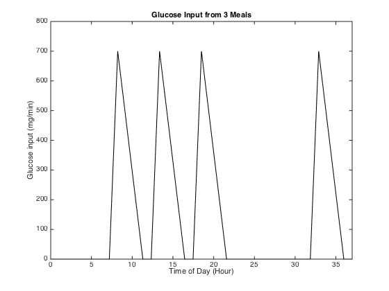
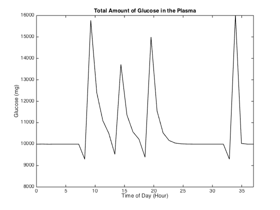

Contents
Final Physiology Project
By Abby Iacangelo, Kyle King, Ben Tunick, Jackie Weber BIOE340 Section 0102
clc, clear all, close all
Create Input Array
% Set maximum peak value as determined by paper peak = 700; % mg glucose/meal % Set time values num_hrs = 37; array_time = linspace(0, num_hrs, num_hrs); hour = length(array_time)/num_hrs; % Set intake to match the graph seen in the paper intake = []; for b = 1:8*hour intake = [intake; 0]; end % Add the three peaks for a = 1:3 % Peak up for i = 1:hour intake = [intake; i*(peak/1)/hour]; end % Peak down for k = 1:3*hour intake = [intake; peak-k*(peak/3)/(hour)]; end % Flat line for j = 1:hour intake = [intake; 0]; end end for j = 1:9*hour intake = [intake; 0]; end for i = 1:hour intake = [intake; i*(peak/1)/hour]; end % Peak down for k = 1:3*hour intake = [intake; peak-k*(peak/3)/(hour)]; end % Flat line for j = 1:hour intake = [intake; 0]; end % Plot the intake figure plot(array_time, intake, 'k'), xlabel('Time of Day (Hour)'), ylabel('Glucose input (mg/min)'), title('Glucose Input from 3 Meals') axis([0 num_hrs 0 800])
Run analysis
Calculate the output function G and in terms of ATP
G = model2(intake); G_moles = (G./1000)./180.1559; ATP_mol_gen = G_moles.*32; % Plot Results figure plot(array_time, (-G+10000),'k'), xlabel('Time of Day (Hour)'), ylabel('Glucose (mg)'), axis on, title('Total Amount of Glucose in the Plasma') axis([0 num_hrs 8000 16000]), set(gca, 'YTickLabel', num2str(get(gca,'YTick')','%d')) % Set physiological rate of caloric consumption (kcal) laying_down = 1650; % C/day eating = 200; sitting = 150; net = laying_down + eating + sitting; % kcal rate_consumed = net/(length(array_time)*686); % moles glucose/hour r_ATP_deplete = (2000*32)/(length(array_time)*456); % molesATP/hr
Manipulate glucose model values
Initialize values for loop
labs = []; glu_moles_metabolisable(1) = G_moles(1); glu_moles_store(1) = 0; store_init = zeros(1, length(intake)); intake = intake./(1000/180.1556); % moles glucose/hour, 1000 is a conversion from mg to g moles_ATP(1) = intake(1)*glu_moles_metabolisable(1) - r_ATP_deplete; % Create new graph figure % Loop through various storage moduli for glu_storage_rate = [0 0.1 0.2 0.3 0.4 0.5 0.6 0.7 0.8] % Loop through time for t = 2:length(intake) glu_moles_metabolisable(t) = intake(t)*(1-glu_storage_rate) + (store_init(t-1) + glu_moles_metabolisable(t-1))*(1 - rate_consumed); glu_moles_store(t) = glu_moles_store(t-1) + intake(t)*glu_storage_rate; % If there's glucose to metabolize, don't change the storage value if (glu_moles_metabolisable(t) >= 0) store_init(t) = 0; % if there's no glucose to metabolize and you're not eating elseif (glu_moles_metabolisable(t) <= 10000 && intake(t) == 0) store_init(t) = glu_moles_store(t-1); glu_moles_metabolisable(t) = store_init(t); glu_moles_store(t) = glu_moles_store(t-1)-store_init(t); % if there's no glucose to metabolize and you're not eating elseif (glu_moles_metabolisable(t) > glu_moles_store(t) && glu_moles_metabolisable(t) < 0) store_init(t) = -glu_moles_metabolisable(t); glu_moles_store(t) = (glu_moles_store(t-1) + store_init(t)); end % Deplete what is consumed moles_ATP(t) = rate_consumed*glu_moles_metabolisable(t-1) - r_ATP_deplete; end % Plot values from time loop hold on, plot(array_time, moles_ATP) end xlabel('Time of Day (Hour)'), ylabel('ATP (moles)'), title('Total ATP'), axis([0 num_hrs 0 40]) % Create legend for z = [0 0.1 0.2 0.3 0.4 0.5 0.6 0.7 0.8] label = cellstr(['Glucose Storage Rate = ',num2str(z)]); labs = [labs label]; legend(labs); end